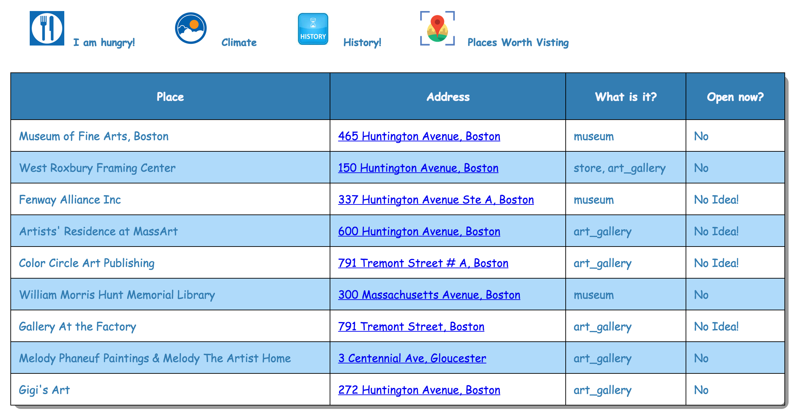

Climate, history and Places Worth Visting
Feature Screenshots
History:
Cliamte:
Places:

Same as I am hungry! tab, the climate, history and places worth visting render same
features as the one in geolocation, however, here the relevent data is fetched based on entered latitude
and longitude.
View Source
View Source